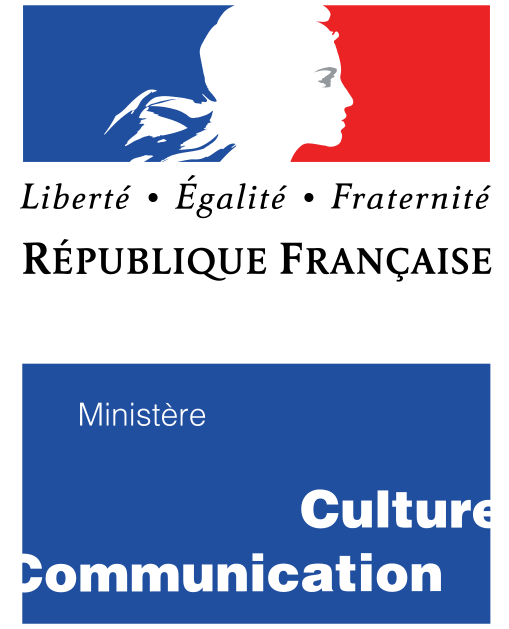

Home
Documentation
Quick Start
Faust Language
Faust Libraries
Downloads
Tools
Faust Web IDE
Faust Playground
Faust Web Editor
Community
Powered By Faust
Events
Getting Help
Reporting Bugs
Faust Conference
Learning Faust
Academic Publications
News up to 2018
Press
Sponsors
Logos
Projects
FAST
Amstramgrame
About
Search
Faust Sponsors
Faust Sponsors

Search
×
Close
From here you can search these documents. Enter your search terms below.
Keyboard Shortcuts
×
Close
Keys
Action
?
Open this help
n
Next page
p
Previous page
s
Search